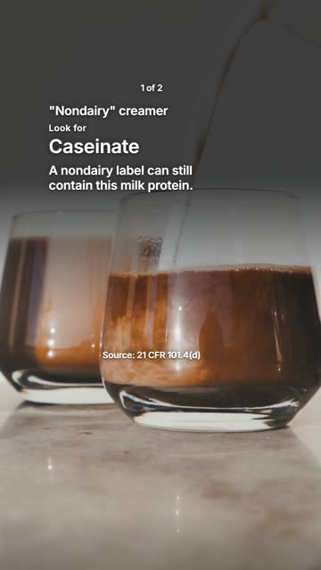
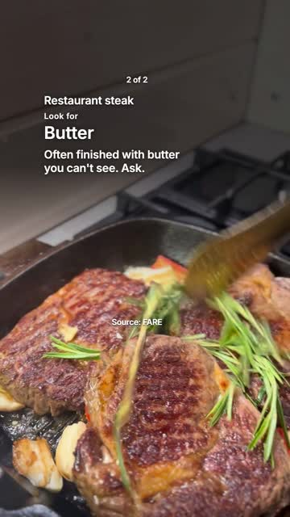

RecipeFix · editorial reset · 28 October 2026
The current cuts are held.
The owner rejected the narration as robotic and the visual format as uninteresting. A file passing export QA does not change that decision. No voice, creative or posting batch is approved.
What failed visually
White text itself is not the problem. Every beat asks the viewer to read while unrelated food action continues underneath. There is little evidence to inspect, no developing demonstration, and the ending repeats the warning. The heavy dark overlay further flattens the food. Changing fonts, stock clips or narrator names preserves that weakness.
1s · actual current cut
7s · actual current cut
15s · actual current cut Real voice tests, without the sales pitch
Eight same-script samples across three voices, two ElevenLabs models, delivery settings and a second provider. Each is a continuous take. Playback copies are normalized to the same target loudness; raw files and settings are retained. No music, speed manipulation, fake laughs or artificial breaths were added.
A cup of flour. A cup of sugar. Same size, right? On King Arthur's chart, that's a hundred and twenty grams of flour, and a hundred and ninety-eight of sugar. Equal cups don't mean equal weight.
No winner is approved. Listen without opening the configuration first. Compare natural phrasing, number pronunciation, sentence endings and whether the question sounds spoken rather than performed. Reject all eight if none clears the bar.
Sample A
12.8 seconds · one continuous takeReveal voice and configuration
Roger · eleven_v4
{"stability": 0.5, "similarity_boost": 0.75}
Sample B
13.1 seconds · one continuous takeReveal voice and configuration
Roger · eleven_v4
{"stability": 0.25, "similarity_boost": 0.75}
Sample C
13.2 seconds · one continuous takeReveal voice and configuration
Roger · eleven_v4
{"stability": 0.25, "similarity_boost": 0.5}
Sample D
12.7 seconds · one continuous takeReveal voice and configuration
Eric · eleven_v4
{"stability": 0.25, "similarity_boost": 0.5}
Sample E
13.6 seconds · one continuous takeReveal voice and configuration
Alice · eleven_v4
{"stability": 0.25, "similarity_boost": 0.5}
Sample F
14.9 seconds · one continuous takeReveal voice and configuration
Roger · eleven_v3
{"stability": 0.5, "similarity_boost": 0.75}
Sample G
11.1 seconds · one continuous takeReveal voice and configuration
cedar · gpt-4o-mini-tts
{}
Sample H
12.0 seconds · one continuous takeReveal voice and configuration
marin · gpt-4o-mini-tts
{}
Rejected finished-cut control
The automated auditory reviewer accepted this owner-rejected control and gave questionable phrase timestamps elsewhere. Its ranking is advisory and unreliable as an approval gate. We are keeping the result, not using it to overrule the owner.
Audition settings and limitations
A: Roger v4, .5 stability/.75 similarity. B: Roger v4, .25/.75. C: Roger v4, .25/.5. D: Eric v4, .25/.5. E: Alice v4, .25/.5. F: Roger v3, .5/.75. G: Cedar with conversational direction. H: Marin with the same direction.
The sample is small and each setting has one take. Lower sliders did not establish a reliable improvement. New script and model effects are separated within A-H, but a continuous take cannot be causally compared against I because I has a different script. No human narrator reference was available. These samples do not establish audience response.
The seven-post critique
| Post | Why a viewer can leave | Stronger concept and required evidence |
|---|
| Hidden dairy | No package or ingredient list is shown. Coffee to steak is a topic jump, not a developing story. | Use one real creamer package: front claim → turn bottle → reveal milk protein in its actual ingredients. Do not imply the current stock glass contains that product. |
| Hidden gluten | The soy sauce pour never proves wheat content. Another warning arrives before the first has a visual payoff. | One bottle and its actual wheat declaration beside a verified gluten-free alternative. Physical label close-up, not invented AI packaging. |
| Kitchen weights | The images do not show either cup being weighed. Text supplies all the substance. | One locked camera shot: tare the same cup, fill and weigh each ingredient, reveal the actual measured values. Use 120g/198g only as attributed chart values, not fabricated scale readings. |
| Not vegan | A broad five-item warning list, obvious dairy imagery and a long recap dilute the useful detail. | One specific label investigation with a visible ingredient and an appropriate replacement. Drop the five-item list. |
| Halal | A sweeping headline hides method, certification and religious context; stock footage cannot settle it. | Hold. Only make a narrowly framed ingredient/certification explainer with qualified review and clear context. |
| Swaps | The promise is universal while the ingredients serve different functions. No texture or cooking result is shown. | One recipe and one function: show the original and changed method, then document both real outcomes before making texture claims. |
| Label rules | Unrelated rules and jurisdictions turn the post into a reading task. No particular decision is resolved. | One real package, one jurisdiction, one practical interpretation. Make native X text plus a cropped annotated evidence image. |
Production recommendation
Make one proof-led piece before another batch. The most credible next shot is hands turning a real package to its ingredient label, or a filmed kitchen comparison. Own or commissioned footage provides the action, result and human detail our library lacks. Stock remains useful for supporting shots; it cannot supply the missing proof.
For voice, keep a continuous performance and edit the pictures to it. If synthetic speech keeps failing the bar, use a real human read. ElevenLabs Voice Changer can preserve an authorized human performance while changing its voice; that is a testable alternative, not a guaranteed fix. Do not clone another creator or use competitor footage.
Use Halyard for factual briefs, rights, exports and exact owner review. Use an ordinary timeline editor for the pilot. Descript's private project exists but AI editing is blocked by its plan credits; no upgrade was purchased. Higgsfield's model catalog is not proof that generated food or people look credible. No AI video was generated or claimed to pass review.
For a fortnightly workflow: choose concepts together, secure the actual demonstration media, approve one finished video and voice, then make native feed/X variants and a small batch. Do not convert every fact into a narrated list or schedule unapproved output.
Evidence
Actual audition configuration and durations · Unfiltered advisory review and reliability note · ElevenLabs settings · Performance-preserving voice changer · OpenAI speech controls